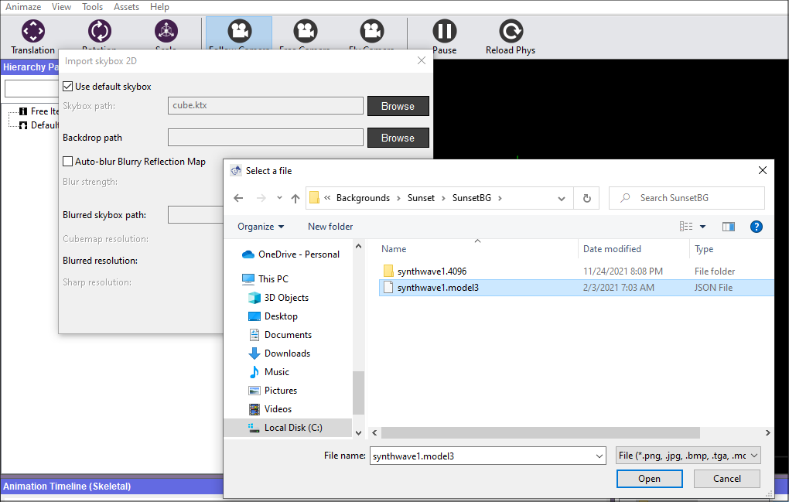
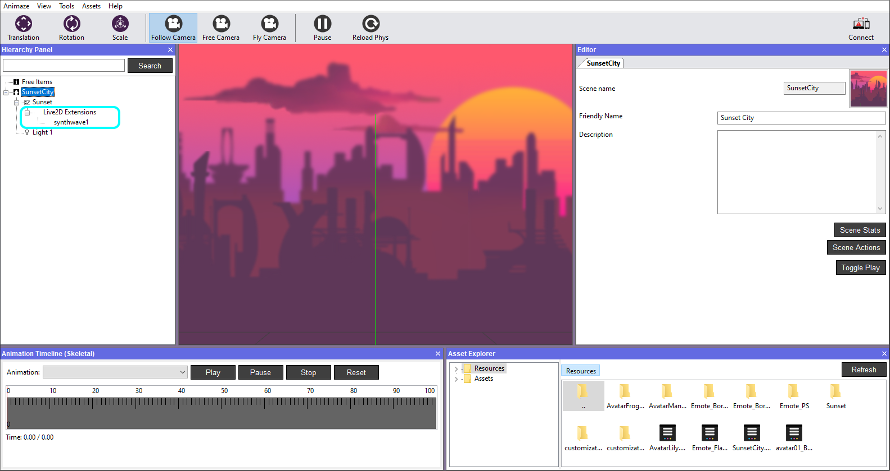
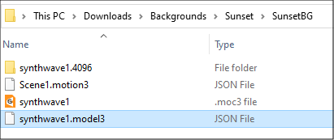
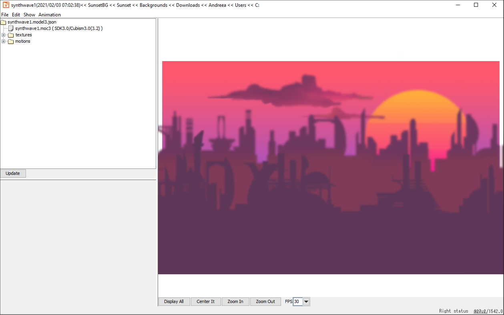
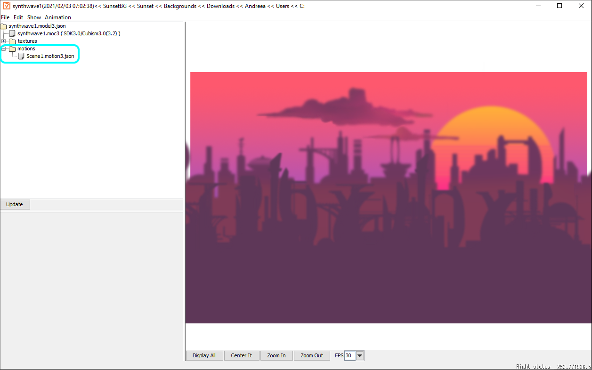
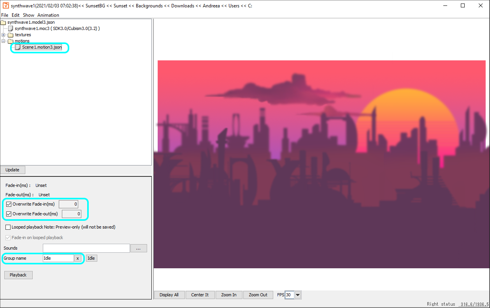
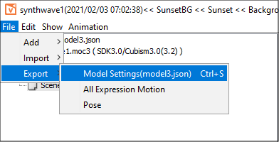

Create a looping animation Background
Importing an animated backdrop has the same process as importing a static 2D background, except that instead of loading a 2D image in the Import SkyBox 2D window, you can select a Live2D model (*.model3.json file) that has the animation you want to loop set as the first animation in the Idle group of the Live2D model.
If these terms seem unfamiliar, please visit the Live2D documentation website.

Everything else stays the same.
Remember to hit Play in the top bar of the Animaze editor, to see the animation playing on the Live2D models in the editor.
For any Live2D model that you will load as an image, a Live2D Extension sub-item will appear in the Hierarchy Panel.

The properties of this sub-item will allow you to configure the Live2D model just like a full Live2D avatar. For more information on configuring Live2D avatars please see our documentation here.
To make the idle animation from cubism work properly in Animaze backgrounds (as a loopable animation to be imported with the background), the following operations are also necessary:
1. Open the model3.json file in Cubism Viewer and pull over the motion3.json file (it is necessary to have these 2 files in the same folder).


2. Expand the motions directory from the left menu

3. Select *.motion3. json, check Overwrite Fade-in and Fade-out > assign them the value 0, and change the Group name to Idle

4. Re-export the *.model3.json file

If you want to load a Live2D *.model3.json as an overlay (instead of a static 2D image) the steps here remain the same, except that when you edit the 2D overlay item, you need to browse and load the Live2D model, instead of the static 2D image.
Tip: As best practice, you can set extra 2-3 frames after the last animation key, for a smoother loop.
When having physics on your model, mind that, in Animaze the physics will overwrite the animations of the avatars/imported assets.
To learn more about such Live2D assets, here is the link to our sample models.